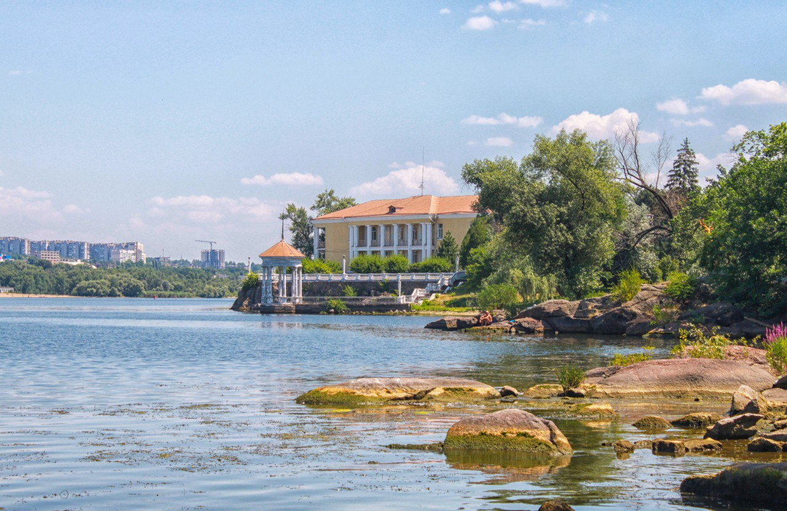
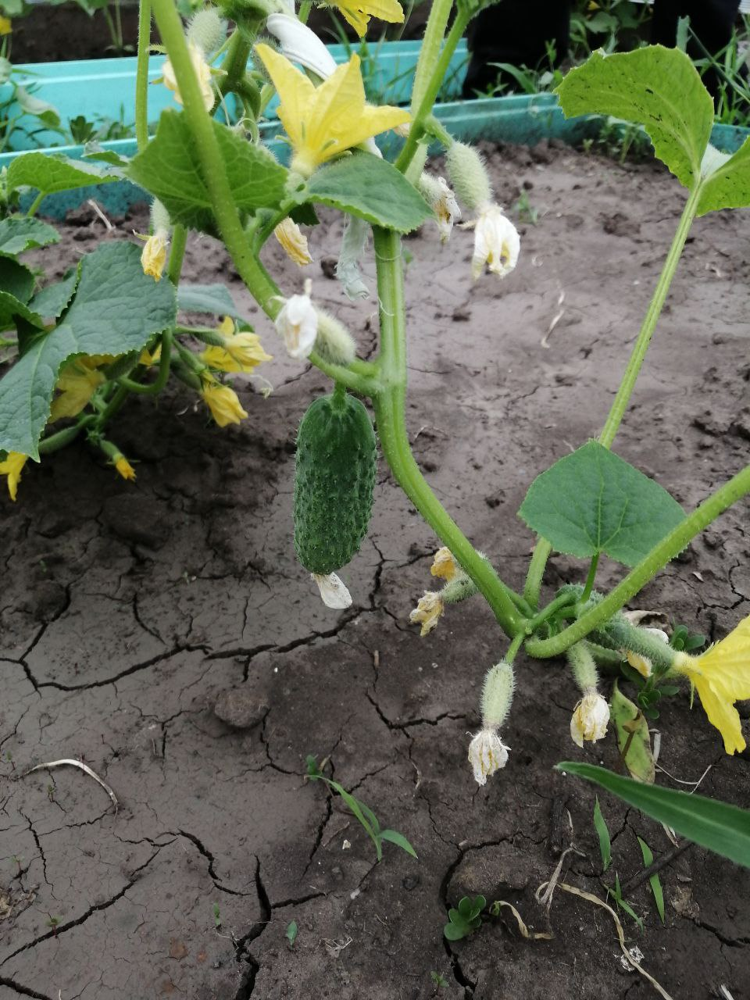

Про мене
Моє місто

Запоріжжя, чарівне місто з багатою історією та неповторним характером, а острів Хортиця - його невід'ємна частина.
Народившись у цьому величному місці, я завжди пишаюся своїм корінням
Острів Хортиця
, що розташований на великій річці Дніпро, є символом славної історії козацтва.
Тут відбувалися великі збори козаків, вони готувалися до боротьби за свободу та незалежність.
Саме тут утверджувалися козацькі звичаї та традиції, які стали символом сили та мужності українського народу.
У цьому дивовижному місті, обмите великою річкою, я знайшов натхнення та силу для своєї творчості.
Кожний куточок Запоріжжя наповнений затишком та теплом, а його мешканці - дружелюбством та гостинністю. Це місто - моє рідне пристаніще, місце, де я почуваюся як вдома.
Острів Хортиця, Запоріжжя - це не просто географічні терміни, це частина мого серця та душі, вічно прекрасні місця, які назавжди залишаться у моїй пам'яті.
Дача

З кожної весни регулярно відвідую батьків на дачі, де процвітає різноманіття рослин:-
Фрукти:
- Абрикоси
- Груші
- Персики
- Яблука
-
Ягоди:
- Виноград
- Полуниця
- Кизил
- Малина
-
Овочі:
- Кабачки
- Огірки
- Патісони
- Помідори
Це лише частина з того, що росте на їх ділянці, але кожен раз повертаюся з новими враженнями та врожаєм.